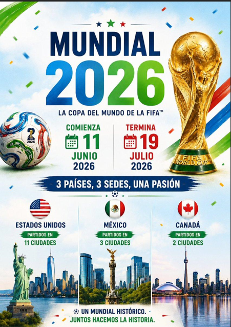
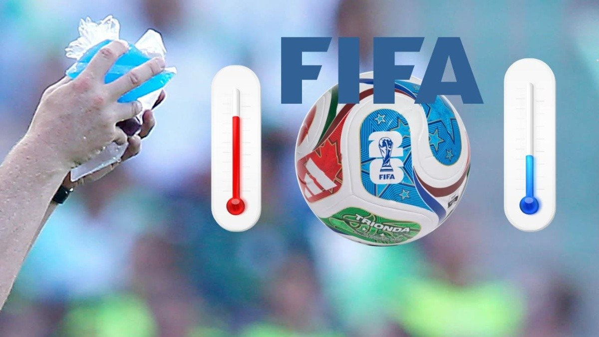
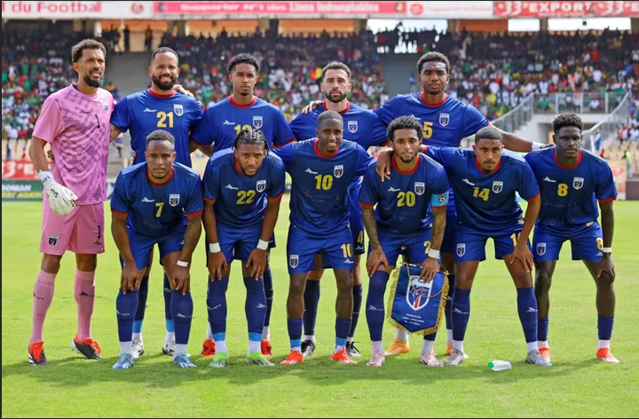

Noticias sobre el nuevo formato de 48 seleciones
Para la Copa Mundial de la FIFA 2026, el torneo pasó de 32 a 48 selecciones, la mayor expansión desde que se adoptó el formato de grupos de cuatro equipos en 1998. El cambio fue aprobado por el Consejo de la FIFA en enero de 2017 e implicó modificar por completo la estructura de la fase de grupos y la fase eliminatoria.
Cómo funciona el nuevo formato
- 48 selecciones distribuidas en 12 grupos de 4 equipos cada uno.
- Cada selección juega 3 partidos en la fase de grupos.
- Avanzan el primero y el segundo de cada grupo, más los 8 mejores terceros de los 12 grupos, para un total de 32 equipos en dieciseisavos de final.
- El torneo pasó de 64 a 104 partidos (+62.5%) y se extiende a 39 días, frente a los 29-32 días de ediciones anteriores.
- Se añadió una ronda eliminatoria completa (dieciseisavos de final), que antes no existía.
Ventajas del nuevo formato
- Mayor inclusión de confederaciones: Asia pasó de 4-5 a 8 cupos, África de 5 a 9 y la Concacaf de 3-4 a 6, permitiendo el debut de selecciones como Cabo Verde, Curazao, Jordania y Haití.
- El sistema de 'mejores terceros' mantiene la lucha por la clasificación intensa hasta el último partido de la fase de grupos, ya que incluso un tercer lugar puede ser suficiente para avanzar.
- Más partidos y más selecciones se traducen en mayor audiencia global, más ingresos por derechos de televisión y un negocio más rentable para la FIFA (se proyectaron ingresos por encima de los 14,300 millones de dólares).
- Estadios llenos y buen nivel competitivo en la práctica: han surgido selecciones revelación y numerosos partidos eliminatorios se han decidido por detalles mínimos.
Impacto y critica sobre la competitividad
- Los 16 cupos adicionales corresponden, por definición, a selecciones que no habrían clasificado con el formato de 32 equipos, lo que genera partidos con diferencias de nivel muy marcadas (por ejemplo, potencias europeas o sudamericanas frente a debutantes).
- Con 8 de 12 terceros lugares clasificando, varios equipos llegan a la última jornada de grupos ya calificados, lo que reduce la intensidad de algunos partidos finales de grupo.
- La ronda adicional implica más partidos por equipo (hasta 8 para el finalista, uno más que antes), lo que aumenta el desgaste físico, especialmente para selecciones con planteles menos profundos.
- El criterio de fair play (tarjetas amarillas y rojas) puede terminar decidiendo la clasificación de los mejores terceros, como ya ocurrió con Senegal en Rusia 2018.
Organización conjunta de Estados Unidos, México y Canadá: desafíos logísticos y coordinación
La Copa Mundial de la FIFA 2026 es la primera edición organizada conjuntamente por tres países. Estados Unidos, México y Canadá vencieron a la candidatura de Marruecos en la votación del Congreso de la FIFA de 2018, en gran parte gracias a su infraestructura de estadios ya existente y a la capacidad logística que exigía un torneo con 48 selecciones.
Estructura organizativa
- Se crearon entidades operativas específicas por país (con sede en Ciudad de México y en Miami) encargadas de la gestión de proyectos del torneo y de servir de enlace entre el Consejo de la FIFA, las federaciones nacionales y los gobiernos de cada país.
- Cada una de las 16 ciudades sede estableció un 'Comité del Mundial FIFA 2026' propio, responsable de los aspectos logísticos locales.
- El reparto de partidos no fue equitativo: Estados Unidos concentra la mayoría de los encuentros (78 de 104), mientras que México y Canadá reciben 13 cada uno, debido a la mayor cantidad de estadios y conexiones aéreas estadounidenses.
Desafíos logisticos
- Coordinar tres marcos regulatorios distintos, con controles aduaneros, permisos de tránsito y requisitos de seguridad propios de cada país para el traslado de equipos técnicos, material audiovisual e infraestructura temporal.
- Distancias de hasta 3,000 kilómetros entre algunas sedes, lo que exige una planificación estricta de vuelos, rutas terrestres y ferroviarias para delegaciones, aficionados y equipos de transmisión.
- Gestión de fronteras y visados para jugadores, cuerpos técnicos, árbitros, periodistas y aficionados de las 48 selecciones, en un contexto de políticas migratorias más estrictas en Estados Unidos.
- Necesidad de planes de contingencia ante climas extremos, congestión aeroportuaria, fallas de transporte terrestre o incidentes de seguridad en los estadios.
- Coordinación política entre los tres gobiernos en temas de seguridad y comercio (incluida la revisión del T-MEC), en un momento de tensiones diplomáticas entre Estados Unidos, México y Canadá.
Altas temperaturas y pausas de hidratación
Durante el Mundial 2026, la FIFA implementó pausas obligatorias de hidratación debido a las altas temperaturas registradas en varias sedes de Estados Unidos, México y Canadá. Aunque la medida fue presentada como una estrategia para proteger la salud de los jugadores, también surgieron críticas relacionadas con posibles intereses comerciales, ya que estas pausas permiten insertar espacios publicitarios durante las transmisiones televisivas.
Aspectos relevantes son, las altas temperaturas representan un riesgo real para la salud física de los jugadores, las pausas de hidratación aumentaron la duración de los partidos, algunos aficionados consideran que las pausas benefician a patrocinadores y cadenas televisivas, el debate aumentó tras viralizarse declaraciones antiguas de Diego Maradona sobre la comercialización del fútbol.
Racismo y abuso en redes sociales
El Mundial 2026 también ha estado acompañado por un incremento en mensajes de odio, racismo y ataques en redes sociales contra jugadores y selecciones nacionales. Las plataformas digitales amplifican el alcance de estos comentarios debido a los algoritmos que priorizan contenido polémico y emocional.
Aspectos relevantes relacionados a este tema son, Jugadores han recibido insultos racistas después de partidos importantes, Las redes sociales facilitan campañas masivas de odio y acoso, Las plataformas digitales generan más interacción con contenido polémico, Organizaciones deportivas y sociales han pedido mayor regulación y moderación.
Las selecciones que superaron las expectativas en el Mundial 2026
La ampliación de la Copa del Mundo 2026 a 48 selecciones abrió una ventana histórica para que nuevos nombres asuman el protagonismo, dejando balances contrastantes tras la primera fase del torneo. Mientras combinados emergentes desafiaron la lógica, potencias históricas pagaron caro la falta de efectividad y los desajustes tácticos.
- Cabo Verde: La auténtica cenicienta de la primera fase. Logró avanzar a las rondas de eliminación directa en un hito sin precedentes para su fútbol, sumando tres empates consecutivos en un sector de altísima exigencia y sellando la clasificación histórica que dejó fuera a gigantes continentales.
- Marruecos: Demostrando que las semifinales de Catar no fueron una coincidencia. Clasificaron con autoridad en el Grupo C tras acumular 7 puntos (empatando en la cima con Brasil), exhibiendo un bloque colectivo compacto y transiciones rápidas de primer nivel.
- México: Con el impulso de la localía, el cuadro azteca firmó una fase de grupos impecable en el Grupo A. Finalizó como líder perfecto con 9 puntos, registrando 6 goles a favor y manteniendo su portería imbatida gracias a una gran labor defensiva.
Las grandes decepciones: Eliminaciones tempranas
- Uruguay: La decepción más ruidosa del torneo. La escuadra charrúa se despidió en la fase inicial sin registrar una sola victoria en el Grupo H (2 puntos), convirtiéndose en el único campeón del mundo histórico en quedar fuera a las primeras de cambio en esta edición. El peso ofensivo quedó en deuda y figuras clave no lograron marcar la diferencia esperada.
- Turquía: A pesar de contar con talentos generacionales en el mediocampo como Arda Güler y Hakan Çalhanoğlu, el cuadro dirigido por Vincenzo Montella sufrió desatenciones defensivas letales. Cayeron ante Australia (2-0) y Paraguay (0-1), y su única victoria (2-3 ante Estados Unidos) llegó cuando ya se encontraban matemáticamente eliminados.
- República Checa: Tras llegar con altas expectativas luego de una sólida eliminatoria europea, el equipo centroeuropeo colapsó en el Grupo A. Finalizaron en la última posición con un solo punto y sin poder festejar un solo gol en sus tres presentaciones.
Noticias de junio
Imágenes de las noticias
| Mundial 2026 | Altas temperaturas y pausas de hidratación | Las selecciones que superaron las expectativas en el Mundial 2026 |
|---|---|---|
|
 |
 |
 |
Referencias de noticias
*Mundial 2026: Cuántos grupos son, cómo funciona el formato de 48 selecciones y nuevas fases eliminatorias explicadas*Así es el nuevo formato del Mundial 2026: cuántos equipos, rondas y cómo clasificarán
*Copa Mundial de Fútbol de 2026
*El Mundial 2026 demuestra que organizar un torneo entre varios países sí es posible
*Mundial 2026: Conoce a la selección de Cabo Verde
*Las grandes decepciones del Mundial 2026 : las selecciones que quedaron en deuda